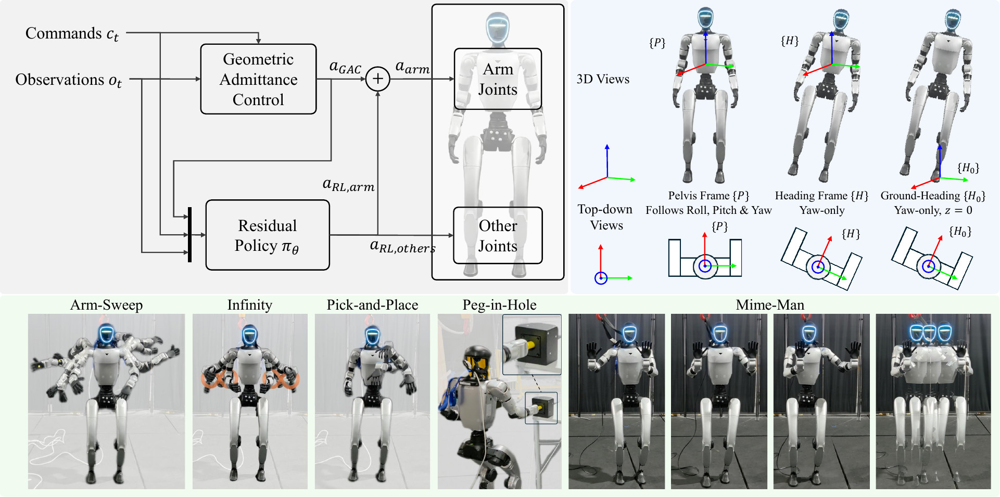
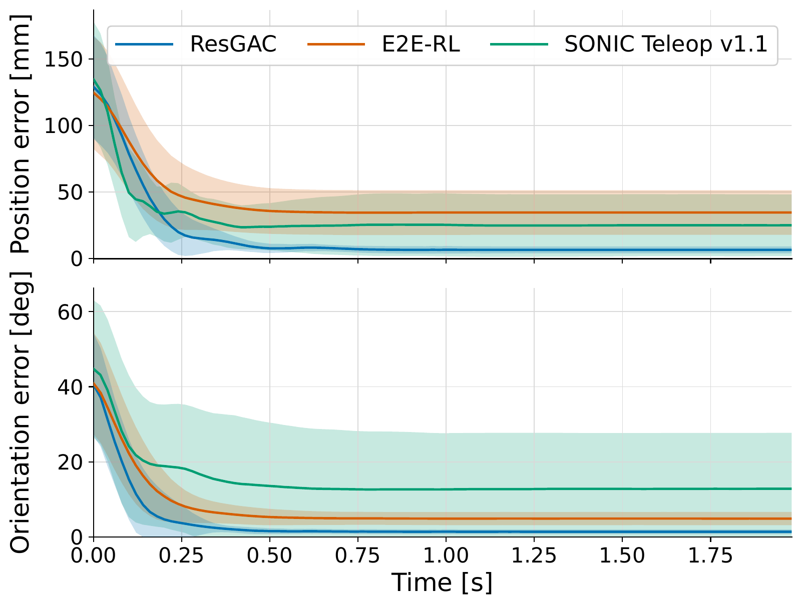
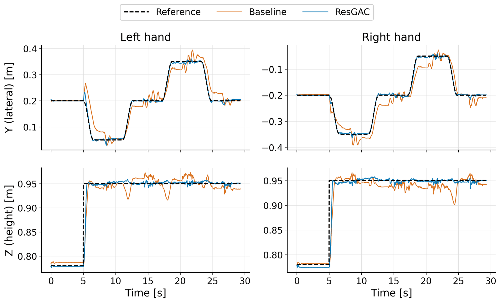

All videos are recorded on hardware. Playback speed is stated in each caption where it is not 1×.
ResGAC on a Unitree G1: full-\(SE(3)\) dual-arm end-effector tracking, locomotion-disturbance rejection, standing peg-in-hole insertion, and world-frame end-effector holding.
ResGAC: A humanoid tracks full-\(SE(3)\) dual-arm end-effector poses while walking. A floating-base geometric admittance controller produces nominal arm joint targets from task-space pose feedback; residual RL adds a bounded correction in the same joint-position action space and controls the remaining joints for locomotion and balance. A ground-attached heading frame removes the kinematic transmission of pelvis roll, pitch, and heave to the end-effector while preserving planar motion. On hardware, ResGAC reaches 6.5 mm / 1.37° tracking error, beats every baseline we tested including SONIC, and succeeds in 90% of standing peg-in-hole trials against 50% for SONIC.
Precise end-effector tracking during humanoid whole-body motion is challenging due to floating-base oscillations, gravity, dynamic coupling, and locomotion-induced disturbances. We propose ResGAC, a whole-body humanoid controller for precise end-effector pose tracking that combines geometric admittance control (GAC) with residual reinforcement learning. GAC provides structured full-pose task-space feedback and generates nominal arm joint-position targets, while residual RL compensates for unmodeled dynamics and coordinates locomotion and balance in the same joint-position action space. The left-invariant geometric formulation allows the same GAC law to be utilized across manipulation reference frames. Based on this formulation, we introduce a ground-attached heading frame that removes the kinematic transmission of pelvis roll, pitch, and heave while preserving planar locomotion. ResGAC is validated on a real Unitree G1 humanoid. Across four end-effector tracking benchmarks, ResGAC consistently outperforms representative baselines, including SONIC, in translational and rotational errors. Real-world experiments further demonstrate reduced transmission of locomotion-induced pelvis disturbances through the proposed ground-attached heading frame, 90% success in a standing peg-in-hole task compared with 50% for SONIC, and accurate full \(SE(3)\) pose world-frame tracking during body motion.

Figure 1: (a) ResGAC consists of a geometric admittance controller (GAC) that provides the nominal end-effector command and a residual RL policy that learns bounded arm corrections while controlling the remaining whole-body joints. (b) The pelvis \(\{P\}\), heading \(\{H\}\), and ground-attached heading \(\{H_0\}\) frames: \(\{H\}\) removes pelvis roll and pitch, and \(\{H_0\}\) additionally removes heave, isolating planar \((x, y, \psi)\) motion from the manipulation task. (c) Evaluation tasks: arm-sweep, infinity, pick-and-place, peg-in-hole, and the Mime-man demo for world-frame end-effector tracking.
GAC is formulated on the floating base. Per control step it builds the geometric elastic wrench \(f_G\) from the \(SE(3)\) pose error, integrates a task-space admittance law, and maps the desired body-frame velocity to joint space through a damped pseudo-inverse with null-space regulation, yielding a nominal joint target \(a_{\text{GAC}}\). The policy adds a clipped residual on the arms and commands every other joint directly, so both act in the same joint-position action space and a zero residual recovers the nominal controller.
Total reward \(r_t = \sum_i w_i r_{i,t}\). \(\exp(\cdot)\) denotes an exponential kernel. Values are the final training stage; curriculum-dependent changes are in the curriculum section.
| Group | Term | Form | σ / Param. | \(w_i\) |
|---|---|---|---|---|
| Manip. | EEF position | \(\exp(L_2^2 + L_1)\) | 0.001 / 0.01 | 4.0 |
| EEF orientation | \(\exp(SO(3))\) | 0.02 | 3.0 | |
| Loco. | Linear velocity | \(\exp(L_2^2)\) | 0.25 | 2.0 |
| Angular velocity | \(\exp(L_2^2)\) | 0.25 | 1.5 | |
| Swing-foot trajectory | \(\exp(L_2^2)\) | 0.008 | 5.0 | |
| Pelvis orientation | \(\exp(L_2^2)\) | 0.04 | 1.0 | |
| Torso orientation | \(\exp(L_2^2)\) | 0.04 | 1.0 | |
| Base height | \(\exp(L_2^2)\) | 3.0 | 1.0 | |
| Reg. | Arm residual | \(L_2^2\) | — | −0.05 |
| EEF body twist | \(L_2^2\) | — | −0.05 | |
| Arm action rate | \(\lVert \Delta a\rVert^2\) | — | −0.5 | |
| Non-arm action rate | \(\lVert \Delta a\rVert^2\) | — | −1.0 | |
| Mean-action accel. | \(\lVert \Delta^2 \mu\rVert^2\) | — | −0.10 | |
| Arm joint velocity | \(L_2^2\) | — | −0.05 | |
| Pose deviation | Weighted \(L_2^2\) | — | −1.0 | |
| Joint-position limit | Linear excess | 95% | −1.0 | |
| Foot proximity | Threshold | 0.15 m | −10 | |
| Foot orientation | \(L_2\) | — | −5 | |
| Turn-in-place drift | Gated \(L_2^2\) | — | −2.5 | |
| Heading drift | Gait-avg. \(L_2^2\) | — | −10 | |
| Lateral drift | Gait-avg. \(L_2^2\) | — | −2 | |
| Standing yaw rate | Gated \(L_2^2\) | — | −2.5 | |
| Foot contact force | Threshold \(L_2^2\) | 400 N | −2 | |
| Pre-touchdown velocity | Gated \(L_2^2\) | 0.15 m/s | −2 | |
| — | Alive / termination | Indicator | — | 10 / −200 |
Every term is defined in full in §1 of the additional details.
| A | B | C | D | E | F | |
|---|---|---|---|---|---|---|
| Task | Stand Fixed | Stand Traj. | Walk Fixed | Walk Traj. | Walk Traj. | Walk Traj. |
| Iterations | ≤ 10k | ≤ 10k | ≤ 20k | 50k | 60k | 60k |
| Cmd. range \((v_x,v_y,\omega_z)\) | 0 | 0 | .3/.3/.5 | .7/.7/.7 | .7/.7/.7 | .7/.7/.7 |
| \(\sigma_P\) | .02 | .01 | .02 | .005→.001 | .001/.01 | .001/.01 |
| \(\sigma_R\) | .20 | .10 | .10 | .10→.02 | .02 | .02 |
| \(\sigma_v\) | .25 | .25 | .25 | .25→.10 | .10 | .10 |
| Height cmd. range [m] | 0.73 | [.68, .78] | [.68, .78] | [.55, .80] | [.55, .80] | [.55, .80] |
| Init. \(q\) scale | [.9, 1.1] | [.85, 1.15] | [.85, 1.15] | [.7, 1.3] | [.7, 1.3] | [.7, 1.3] |
| \(w_{\text{rot}}\) | 2.5 | 2.5 | 2.5 | 2.5 | 3.0 | 3.0 |
| \(w_{\text{res}}\) | −.10 | −.10 | −.10 | −.10→−.05 | −.05 | −.05 |
| \(w_{\text{pose}}\) | −.5 | −.5 | −.5 | −1.0 | −1.0 | −1.0 |
| \(w_{\dot q,\text{arm}}\) | −.0125 | −.0125 | −.0125 | −.02 | −.05 | −.05 |
| \(w_{\text{twist}}\) | 0 | 0 | 0 | −.02 | −.05 | −.05 |
Stages A–C stop early once stable, hence the \(\le\) on their budgets. \(\sigma_P\) for stages E and F lists \((\sigma_2, \sigma_1)\) of the combined \(L_2^2 + L_1\) kernel. Arrows denote in-stage linear annealing, not a step between stages. Policy and optimizer checkpoints transfer sequentially between stages.
| Quantity | Value |
|---|---|
| Admittance mass \(M\) | \(\mathrm{diag}(1.5 I_3,\; 2.25 I_3)\) |
| Stiffness \(K_p = K_R\) | \(5000 I_3\) |
| Damping \(K_d\) | set so damping ratio = 2 |
| Damped pseudo-inverse \(\lambda_{\text{null}}\) | 0.0025 |
| Null-space gain \(k_{\text{null}}\) | 50 |
| Residual scale / clip \(s_r,\, c_r\) | 0.75, 1.0 |
| Joint-position action scale | 0.25 |
| Control rate (GAC and policy) | 50 Hz (sim 200 Hz, decimation 4) |
| Episode length | 20 s = 1000 steps |
| Parallel environments | 4096 |
| Hardware / wall-clock | 1× NVIDIA L40S, ~16 h |
| Algorithm | FastSAC, distributional critic |
| Actor / critic hidden dim | 512 / 768 |
| Total iterations (actual) | 201,911 |
| Deployment kinematics | pinocchio |
PD gains follow BeyondMimic. The critic additionally receives pelvis linear velocity, which is never provided to the actor during training or deployment. The nominal budget is 210k iterations; early stopping in stages A–C brought the actual run to 201,911. Full optimizer and network settings are on the additional details page.
Four held-out reference trajectories, all evaluated while the humanoid maintains a standing posture so that tracking precision is isolated from locomotion-induced disturbance. None of these trajectories appears in the training curriculum.
Pick a trajectory: each tab shows all six controllers, then a head-to-head against SONIC-Teleop-v1.1.
A fast, smooth trajectory spanning a broad arm workspace.
Top row: ResGAC, E2E-RL, GAC+Decoupled-RL. Bottom row: SONIC-Teleop-v1.1, SONIC-Teleop, SONIC-IK-WBT (labeled SONIC-3pt-v1.1 and SONIC-3pt in the video).
ResGAC (left) against SONIC-Teleop-v1.1 (right), the strongest baseline on position error in Table III.
A sequence of discrete full-arm-range setpoints, used to evaluate step-response behavior.
Top row: ResGAC, E2E-RL, GAC+Decoupled-RL. Bottom row: SONIC-Teleop-v1.1, SONIC-Teleop, SONIC-IK-WBT (labeled SONIC-3pt-v1.1 and SONIC-3pt in the video).
ResGAC (left) against SONIC-Teleop-v1.1 (right), the strongest baseline on position error in Table III.

End-effector error convergence for the setpoints arm-sweep. The 25 setpoint intervals are aligned at each command transition (\(t = 0\)) and aggregated; solid curves are the mean position and orientation error, shaded regions one standard deviation.
An infinity-shaped trajectory with simultaneous position and moderate orientation variation.
Top row: ResGAC, E2E-RL, GAC+Decoupled-RL. Bottom row: SONIC-Teleop-v1.1, SONIC-Teleop, SONIC-IK-WBT (labeled SONIC-3pt-v1.1 and SONIC-3pt in the video).
ResGAC (left) against SONIC-Teleop-v1.1 (right), the strongest baseline on position error in Table III.
A slower task-space trajectory sampled from a teleoperated pick-and-place demonstration. Shown at 4× speed.
Top row: ResGAC, E2E-RL, GAC+Decoupled-RL. Bottom row: SONIC-Teleop-v1.1, SONIC-Teleop, SONIC-IK-WBT (labeled SONIC-3pt-v1.1 and SONIC-3pt in the video).
ResGAC (left) against SONIC-Teleop-v1.1 (right), the strongest baseline on position error in Table III.
Mean ± standard deviation over temporal samples and both arms. For the setpoints trajectory, only steady-state samples after each command transition are included. Lower is better; best in bold, second-best underlined. All controllers are evaluated in the pelvis frame \(\{P\}\) except SONIC-Teleop-v1.1, whose released policy uses a heading-frame representation and is therefore reported in \(\{H\}\).
| Controller | Smooth | Setpoints | Infinity | Pick-and-Place | ||||
|---|---|---|---|---|---|---|---|---|
| Pos. [mm] | Rot. [°] | Pos. [mm] | Rot. [°] | Pos. [mm] | Rot. [°] | Pos. [mm] | Rot. [°] | |
| E2E-RL | 43.6 ± 31.1 | 9.36 ± 7.47 | 33.9 ± 20.9 | 4.87 ± 3.24 | 33.6 ± 14.9 | 8.36 ± 4.42 | 35.5 ± 31.6 | 6.02 ± 1.56 |
| SONIC-IK-WBT | 41.7 ± 27.6 | 18.86 ± 13.37 | 25.1 ± 17.6 | 15.42 ± 11.01 | 32.3 ± 32.4 | 14.06 ± 13.01 | 21.9 ± 5.9 | 15.31 ± 5.94 |
| SONIC-Teleop | 39.6 ± 40.3 | 23.23 ± 20.52 | 25.3 ± 19.6 | 18.32 ± 11.56 | 18.4 ± 9.0 | 11.00 ± 5.40 | 23.9 ± 13.9 | 24.63 ± 9.09 |
| SONIC-Teleop-v1.1 | 34.3 ± 29.0 | 17.60 ± 26.86 | 19.7 ± 9.6 | 8.65 ± 8.63 | 15.3 ± 6.4 | 6.44 ± 2.77 | 14.5 ± 3.9 | 6.23 ± 3.17 |
| GAC+Decoupled-RL | 98.5 ± 32.5 | 14.80 ± 6.16 | 94.5 ± 24.9 | 13.31 ± 3.78 | 50.6 ± 12.6 | 9.47 ± 1.87 | 74.1 ± 37.5 | 12.25 ± 3.68 |
| ResGAC (ours) | 22.4 ± 25.0 | 5.29 ± 7.00 | 6.5 ± 3.7 | 1.37 ± 0.76 | 14.1 ± 7.1 | 3.63 ± 2.15 | 6.6 ± 2.7 | 1.67 ± 0.75 |
E2E-RL uses the same recipe as ResGAC with the nominal GAC controller removed. It shows consistently larger tracking errors, which is the case for explicit task-space feedback.
GAC+Decoupled-RL removes the arm residual instead: the arms are controlled by GAC alone while RL handles the remaining joints. It performs substantially worse than ResGAC — and worse than E2E-RL on position — indicating that geometric feedback alone does not compensate for gravity and whole-body dynamic coupling. Both halves of the architecture are load-bearing.
A static arm-holding task during forward and backward walking, comparing two ResGAC policies that differ only in their manipulation reference frame. The transmission ratio \(\rho_x = \sigma_{\text{EEF},x} / \sigma_{P,x}\) normalizes end-effector variation by the pelvis variation that caused it; lower means stronger rejection.
Left: ground-attached heading frame \(\{H_0\}\) (proposed). Right: pelvis frame \(\{P\}\). Both policies hold a fixed end-effector command while the humanoid walks.
| Metric | Ground-heading \(\{H_0\}\) | Pelvis \(\{P\}\) |
|---|---|---|
| Pelvis roll std. [°] | 1.218 | 1.322 |
| Pelvis pitch std. [°] | 3.794 | 4.107 |
| Pelvis \(z\) std. [mm] | 6.280 | 6.219 |
| EEF roll std. [°] | 0.963 | 1.266 |
| EEF pitch std. [°] | 3.621 | 3.962 |
| EEF \(z\) std. [mm] | 5.558 | 6.632 |
| Roll transmission ratio | 0.790 | 0.958 |
| Pitch transmission ratio | 0.954 | 0.964 |
| \(z\) transmission ratio | 0.884 | 1.068 |
Pelvis disturbance levels are comparable between the two policies, so the difference is attributable to the frame rather than to a gentler gait. The improvement in pitch is smaller, indicating that pitch variation is less effectively rejected through frame selection alone.
Whether the tracking accuracy is sufficient for task-level manipulation, tested as standing peg-in-hole insertion. The standing configuration isolates manipulator accuracy from lower-body placement error. The hole pose is estimated from OptiTrack markers and used as the insertion target for both controllers.
| Controller | Successes | Success rate |
|---|---|---|
| ResGAC (ours) | 18 / 20 | 90% |
| SONIC-Teleop-v1.1 | 10 / 20 | 50% |
The marker-to-hole transform is not precisely calibrated, so the commanded target carries a registration error with respect to the true hole pose. To accommodate it, the task uses a 10 mm diametral clearance: a 25 mm peg into a 35 mm hole. Each controller is evaluated over 20 trials against the same externally estimated target.
Both ResGAC failures occur when the registration error is compounded by temporary OptiTrack marker occlusion. For SONIC, insufficient tracking accuracy is the primary failure mode, with occlusion and registration error as an additional, shared source of uncertainty.
Shown at 2× speed (real-time version); left ResGAC, right E2E-RL. The end effectors are moved to designated world-frame poses and then commanded to remain fixed in the world while the humanoid translates and rotates its body. Locomotion commands come from OptiTrack-based pelvis localization.
ResGAC holds the commanded world-frame pose to a position mean absolute error of 8.8 mm and an orientation mean absolute error of 2.69°, against 30.0 mm and 13.75° for E2E-RL — even with the world-frame reference compensator tuned for the baseline.
Both controllers use the same \(\{H_0\}\) representation, global wrapper, and world-to-\(H_0\) command conversion \(g_{H_0D} = g_{WH_0}^{-1}\,g_{WD}\). Because the converted command varies as the body moves, a causal inverse-dynamics compensator for an approximate second-order tracking response is applied to the converted reference, using only current and past samples.

World-frame \(YZ\) tracking of both hands in the Mime-man demo. "Baseline" is E2E-RL. Position and orientation mean absolute errors: 8.8 mm and 2.69° for ResGAC, 30.0 mm and 13.75° for E2E-RL.
A supplement, not a summary: the exact definition of all 25 reward terms, the observation pre-processing, the action-scaling decomposition, the optimizer and network settings, and the complete list of what differs in the E2E-RL baseline. The method itself is in the paper.